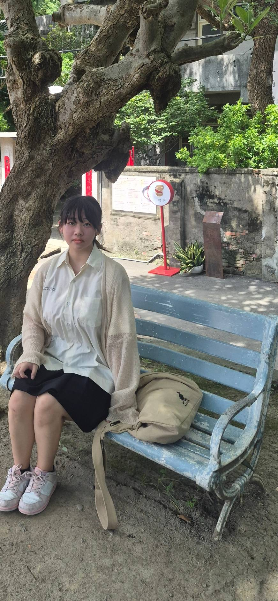

三重空軍一村
人物圖鑑


故事前言
民國三十八年，三重空軍一村迎來了一群年輕的軍人與眷屬。紅磚牆瓦、巷弄交錯，這裡原本只是他們落腳的臨時停靠站，卻在時代的洪流中，成了一生落地生根的家。
一場突如其來的緊急警報，打破了三重空軍一村的平靜。砲兵林志遠抓起飛行夾克奔向基地，這一別，便成了永別。
幾十年後的今天，當你們再次踏入這座村子，空氣中彷彿還留著當年的期盼與遺憾。今天你們將作為時空的「穿越者與見證者」，協助留在民國60年代、獨自守候家園的妻子阿秀，找回那封遲到了半個世紀的信件，完成一場跨越時空的告別。
信件碎片
請幫助阿秀找尋散落在空軍三重一村中的信件碎片。信上有志遠和阿秀才知道的情話，請幫助阿秀找回志遠留給她的話。
頁面操作說明
- 剩餘時間：委託總時間為 90 分鐘，計時器將顯示於主畫面。
- 信件碎片：點擊下方「信件碎片」按鈕，可隨時檢視收集進度與內容。
- 返回總部：點擊下方「回主畫面」，可隨時返回總部確認下一個任務地點。
輸入任務代碼
請檢查任務小卡上8碼代碼
關卡現場位置提示

園區中央的地下甬道是二戰時期是日軍台灣軍司令部選定的「高射砲陣地」，負責防守台北橋與總督府。
為了因應戰爭與空襲威脅，日軍在這一帶設置防空相關設施，除了地面上的防空砲台之外，也建造了地下甬道與相關空間。
這些地下設施讓人員能夠在不同的防空位置之間移動，也具有躲避空襲及存放物資等用途。甬道出口就是這套地下防空系統留下來的歷史痕跡之一。
找到白T關主後：
陣地巡查任務牆
點擊完成定點打卡（可重複查看指示）
請觀看關主後方的地圖
提醒：可以和隊員們分頭尋找再一起拍照喔！
任務二：終戰密碼
前往村長的家


這是在村長家的廚房裡...
請先拍攝現場「村長的家」作為調查記錄，以解鎖眷村味覺檔案。
大時代的動盪，讓無數家庭在戰亂中遷徙來台。窄小的屋舍、悶熱的夏日，讓鄰居們習慣搬著竹椅聚在村子裡的巨大榕樹下乘涼、聊家常。
對我們而言，這棵老榕樹下的廣場不只是公共客廳，更是凝聚所有人情感、度過童年時光的避風港。
今天，請跟著我們一起走入這座充滿人情味的榕樹廣場，回到那段克難卻溫暖的歲月。
【尋人啟事】目標特徵


活動指引
歡迎來到榕樹廣場！在接下來的活動中，你們將扮演眷村裡的鄰家小孩。
- 活動體驗：現場將準備瓜子與水果讓大家邊吃邊聊，並有編繩子、跳繩、猜字謎等復古互動。
- 注意事項：請放輕鬆，跟著 NPC 的引導融入情境。一起幫忙照顧身邊的「鄰居」們！
知識測驗
抵達確認
請穿越96通廊找到蘋果前的群星會...


主持人為我們帶來...
時光膠囊
這裡曾是充滿人情味與時代記憶的眷村。在物資缺乏的年代裡，空氣中總是飄著淡淡的花香，街頭巷尾也流淌著動人的歌聲。
今天，我們將跟著老居民奶奶的腳步，打開珍藏多年的木盒，一起找回三重過去被遺忘的產業與溫暖回回忆。
角色介紹
尋找香氛記憶
奶奶：「桌上有瓶明星花露水，裡面藏著哪些花香？畫面上有六種花，答案共有兩種，快從中把它們找出來吧！」


點播時代金曲
奶奶：「以前三重讓人記得的，可不只有花香，還有熱鬧的唱片產業。選一首你現在最想聽的曲子點播吧！」
最終地點：眷村市集
您已成功收集所有碎片！
指揮所偵測到終點座標為：
北緯 25.057678, 東經 121.499645
請在現場就位後，按下按鈕開啟最後的信件。
請從 NPC 處獲得最終密碼：
關卡六 結案
提示
歷史碎片收納盒
跨越時空的信
請跟著阿秀一起唸出志遠留下的 8 個字
點擊任意處關閉
點擊任意處或右上角關閉